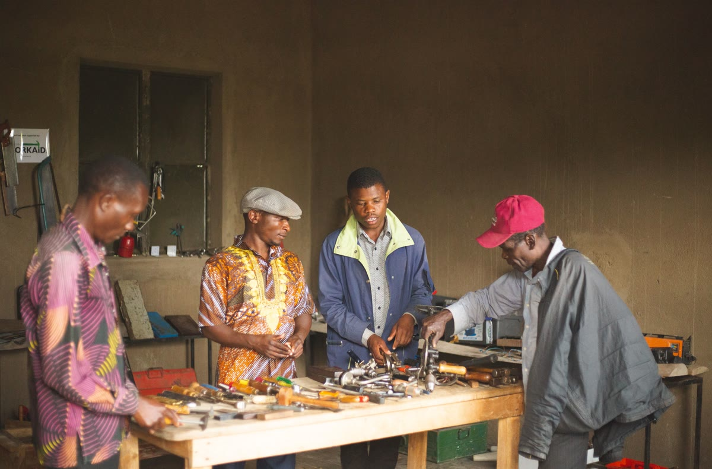

ÉPISODE 5█
PERSONNE NE DEVIENT CONNU
EN PARLANT DE TOUT
EN PARLANT DE TOUT
ON TE DIT QU'IL FAUT PLAIRE
À TOUT LE MONDE
À TOUT LE MONDE
POUR ÊTRE CONNU
EN VRAI,
C'EST LE CONTRAIRE
C'EST LE CONTRAIRE
TU DEVIENS CONNU QUAND TU PARLES
D'UNE SEULE CHOSE, TOUT LE TEMPS
D'UNE SEULE CHOSE, TOUT LE TEMPS
DANS NOTRE STRATÉGIE
V
E
N
D
R
E
✦
✦
✦
✦
N
C'EST LA NOTORIÉTÉ
C'EST LE MOMENT OÙ LES GENS
COMMENCENT À TE RECONNAÎTRE
POUR CE TRUC PRÉCIS
COMMENCENT À TE RECONNAÎTRE
POUR CE TRUC PRÉCIS
✓
✓
✓
ÇA IMPLIQUE TROIS
CHOSES CONCRÈTES
CHOSES CONCRÈTES
1
CONSULTING
COACHING

ARTISANAT
MENUISERIE
✓
PLUS TU ES PRÉCIS,
PLUS ON TE RECONNAÎT VITE
PLUS ON TE RECONNAÎT VITE
2
RESTE RECONNAISSABLE,
AVEC LE MÊME TON
AVEC LE MÊME TON
ET LE MÊME STYLE
À CHAQUE VIDÉO
À CHAQUE VIDÉO
3
RÉPÈTE LE MÊME MESSAGE
JUSQU'À CE QU'IL SOIT ASSOCIÉ À TOI
JUSQU'À CE QU'IL SOIT ASSOCIÉ À TOI
😴
TOI, TU EN AS PEUT-ÊTRE
MARRE DE LE DIRE
MARRE DE LE DIRE
LES AUTRES VIENNENT TOUT JUSTE
DE L'ENTENDRE POUR LA PREMIÈRE FOIS
DE L'ENTENDRE POUR LA PREMIÈRE FOIS

REGARDE ONCLE DAVID

IL NE PARLE PAS DE TOUT L'ARTISANAT,
JUSTE DE SON GUIDE DE MENUISERIE
JUSTE DE SON GUIDE DE MENUISERIE
QUAND QUELQU'UN PENSE À UN GUIDE
POUR APPRENDRE UN MÉTIER MANUEL
POUR APPRENDRE UN MÉTIER MANUEL
C'EST LUI QU'ON RECOMMANDE
PROCHAINE ÉTAPE
UNE FOIS RECONNU
POUR TON TRUC...
POUR TON TRUC...
TRANSFORME CETTE RECONNAISSANCE
EN CLIENTS RÉGULIERS
EN CLIENTS RÉGULIERS
PROCHAIN ÉPISODE
V
E
N
D
R
E
LA DISTRIBUTION
ABONNE-TOI
👆
ET POURSUIVONS
CETTE AVENTURE ENSEMBLE
CETTE AVENTURE ENSEMBLE